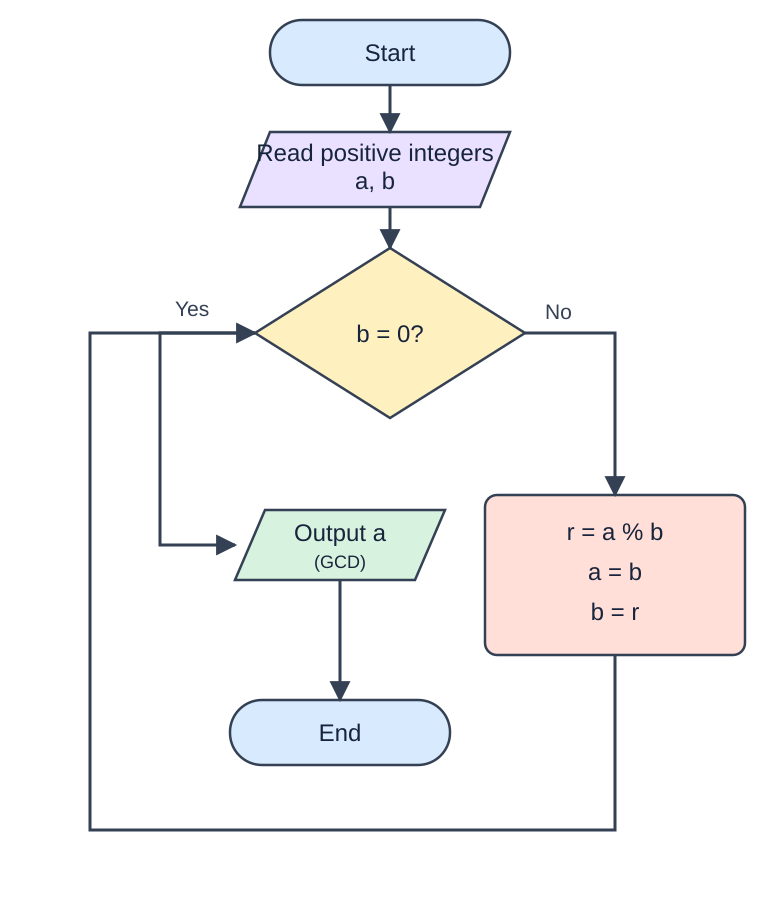

Midterm Quiz 01 – Practice Test (Not Graded)
13 questions · 22 points · 45 minutes
This is a practice version of Midterm Quiz 01. Results are for self-assessment only and will not count toward your semester grade. The official quiz carries 10% of the semester grade.
Work individually. Do not use AI assistants, external websites, search engines, notes, or another person’s solutions. You may use the tools and sample solutions provided on this test page; viewing a solution is recorded.
Keep this browser tab active. The first detected tab/window switch triggers a warning; the second ends the attempt. Refreshing does not reset the timer. This is practice. Closing the page may lose your work.
Unfinished attempt detected. Your timer continues while the page is closed.
Neptun: · Time remaining: 45:00 ·
Theory questions (10 points)
Question 1 (1 point)
Data that has been organized and has meaning is referred to as …
Question 2 (1 point)
Which historical machine was designed to calculate polynomials but was not built in the inventor’s lifetime?
Question 3 (1 point)
Which of the following is an advantage of using pseudocode as an algorithmic description tool?
Question 4 (1 point)
What is a common disadvantage of using flowcharts as a tool for describing algorithms?
Question 5 (1 point)
Which of the following is NOT a property of data types, according to the lecture?
Question 6 (1 point)
What does the range() function in Python return when used in a for loop?
Question 7 (1 point)
Which statement is used to exit a loop immediately in Python, regardless of the loop condition?
Question 8 (1 point)
What is the role of the logical and operator in Python?
Question 9 (1 point)
Which of the following operators is used for floor division in Python?
Question 10 (1 point)
What type of programming language is Python?
Python exercises (12 points)
Question 11 – Translate the algorithm into Python (4 points)
Translate the Euclidean algorithm shown in the flowchart into Python code. Read two positive integers and print their greatest common divisor. Your program must follow the remainder-based algorithm (%), rather than calling a built-in GCD function.

Follow the flowchart steps. A correct result obtained with a different algorithm does not receive full marks.
Question 12 – BMI calculator (4 points)
Write a program that calculates a person’s Body Mass Index (BMI) and determines their health status:
If BMI is less than 18.5, print “Underweight”. If BMI is between 18.5 and 24.9, print “Normal weight”. If BMI is between 25 and 29.9, print “Overweight”. If BMI is 30 or greater, print “Obesity”.
BMI = weight / height ** 2 (weight in kilograms, height in meters).
Question 13 – Login attempts (4 points)
Write a Python program that checks whether a user enters the correct username and password. Allow up to 3 attempts. After 3 incorrect attempts, display a message indicating that no attempts remain.
For this practice exercise, the valid username is student and the password is python123. Read the username and password on each attempt. Print Login successful for a valid login, or No more attempts left after three unsuccessful attempts.
Evaluate my work
Practice only — not graded. Only Evaluate my work sends your answers to Azure. Unfinished attempts are stored locally in this browser. Theory questions are scored on the server; Python scoring is pending. AI feedback includes approximate Python scores (not an official grade) when configured on the server.
Submitted results remain saved in Azure. Unsubmitted attempts are discarded. Starting again creates a separate attempt.